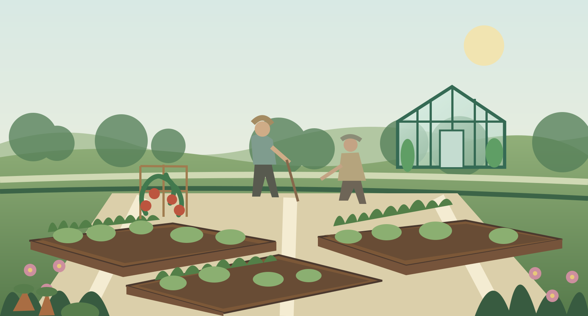

Volkstuinvereniging Lisserbroek · Sinds 2010
Ruimte om te groeien.
Een groene plek voor iedereen die graag buiten is, zelf kweekt en kennis deelt. Hier draait het om tuinieren met aandacht — en om de mensen die dat samen doen.

Een plek voor tuindersBuiten bezig zijn.
Buiten bezig zijn.
Samen iets opbouwen.
Volkstuinvereniging Lisserbroek brengt mensen samen die plezier hebben in zaaien, verzorgen en oogsten. Een plek om tot rust te komen, van elkaar te leren en te genieten van het ritme van de seizoenen.
Maak kennis met de verenigingOntdek de vereniging
Alles wat een volkstuin bijzonder maakt.
Van het eerste zaadje tot een rijke oogst — en alles daartussenin.
Welkom bij de vereniging
Samen verder groeien.
Meer weten over lid worden of een tuin aanvragen? Bekijk de mogelijkheden en neem contact met ons op.
Ontdek lid worden →